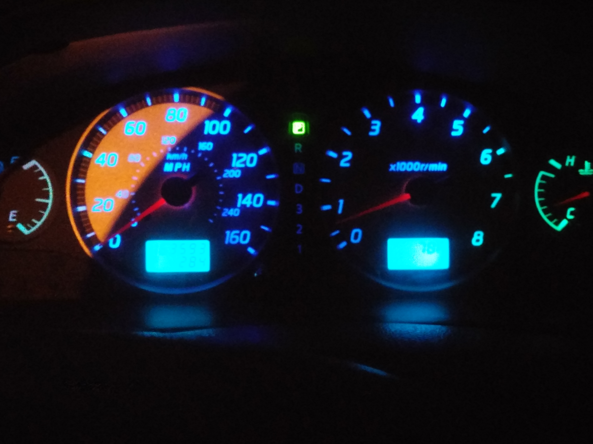
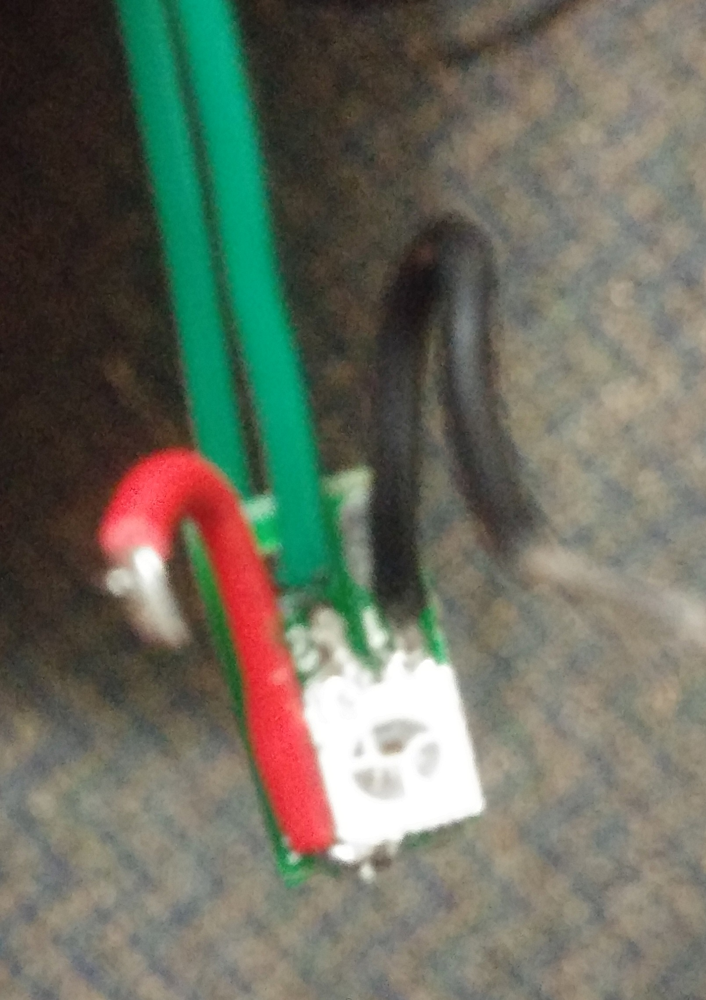
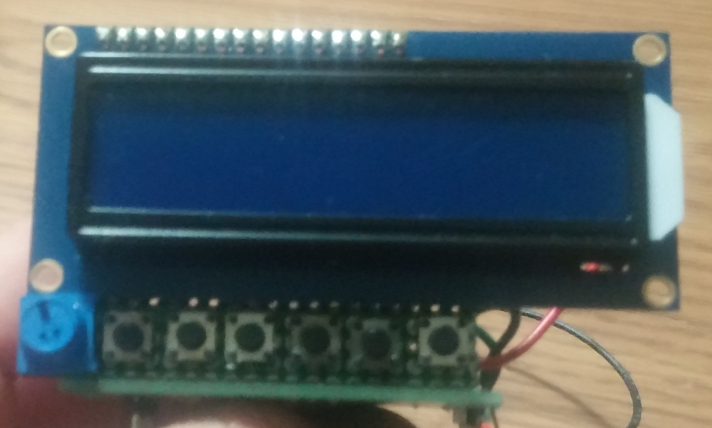

The Responsive Car Gauges project reads engine statistics over the OBD2 port, then adjusts gauge backlighting color accordingly on an individual basis. For example, as you rev the engine, the rpm gauge would go from blue to red.

The first step required for this project was replacing the lights behind my gauges with multicolored LEDs that I could control. For this I opted for individual WS2812B LEDs (otherwise known as neopixels). In each light socket there was only room for two LEDs back to back on a prototype board.

The LEDs left some brightness to be desired around dusk and dawn, but worked well in complete darkness. To change which engine value a gauge is synchronized with, an lcd display was mounted in my car's ash tray with some buttons below it. RPM, speed, engine load, engine temp, and throttle percent were the supported data points in addition to some basic solid color options.

Communication with the car was done over the standard OBD2 port. I tried a variety of adapters including one from Sparkfun and using an HC-05 chip to pair with my existing bluetooth diagnostic tool. In the end, the wired Sparkfun adapater proved to be the most reliable. The car took around 0.1s to respond to requests so I utilized interpolation to smooth out changes, but the delay in changes was still fairly noticeable.